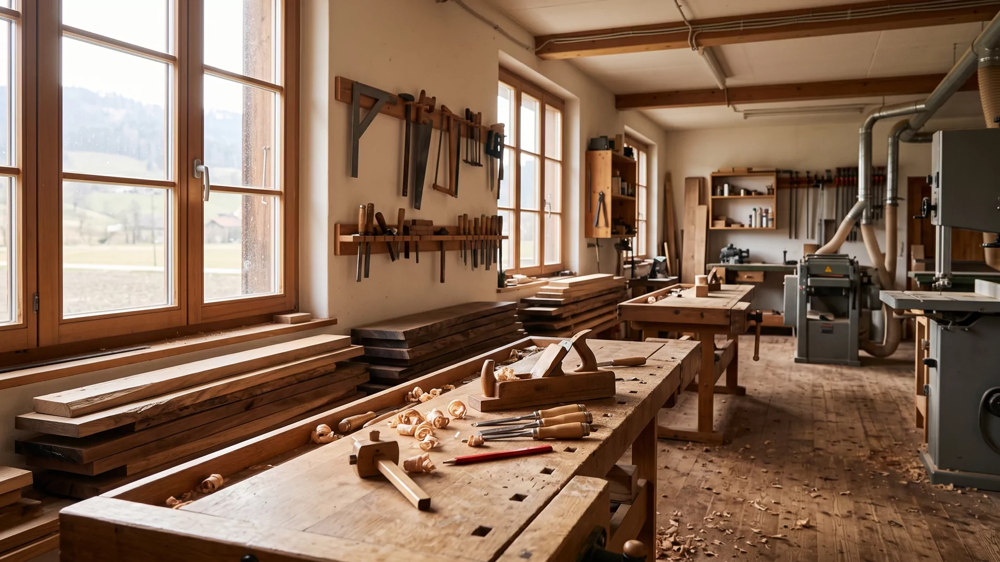

Einbauschränke
Auf den Millimeter in Nische, Dachschräge oder Flur gefügt. Innenleben nach Ihrem Alltag, nicht nach Norm.

Schreinerei · Langnau im Emmental
Massivholz aus der Region, gefügt in Langnau. Vom Einbauschrank bis zur Eichenküche — von Hand, mit Verstand, seit 1987.
Leistungen
Keine Serienware, keine Kataloge. Jedes Stück wird für Ihren Raum gezeichnet, in unserer Werkstatt gefertigt und von uns montiert.
Auf den Millimeter in Nische, Dachschräge oder Flur gefügt. Innenleben nach Ihrem Alltag, nicht nach Norm.
Massivholzküchen, die man anfassen darf. Geölte Fronten, Schubladen aus Schwalbenschwanz — gebaut für dreissig Jahre Znacht.
Tische, Bänke, Betten, Sideboards. Aus dem Brett, das wir mit Ihnen zusammen im Lager aussuchen.
Täfer, Böden, Treppen, ganze Stuben. Wir arbeiten mit dem Bestand, nicht gegen ihn — auch im zweihundertjährigen Bauernhaus.
Alte Möbel behalten ihre Geschichte, bekommen aber wieder Alltag. Behutsam ergänzt, traditionell verleimt.
Haustüren mit Charakter, Zimmertüren nach Mass, Holzfenster im Denkmalschutz. Dicht, ehrlich, schön.
Projekte
Wir zeigen hier bewusst keine Hochglanzfotos — sondern Material, Ort und Jahr. Wer eines dieser Stücke sehen will: Die meisten Kundinnen und Kunden zeigen es gern. Wir stellen den Kontakt her.
Durchgehende Maserung über fünf Fronten, Becken aus geschwärztem Chromstahl, Griffleisten von Hand ausgekehlt.
Sieben Elemente, kein rechter Winkel am Bau — jede Fuge einzeln angerissen. Front Nussbaum, Korpus Weisstanne.
Vier Meter Esche aus einem Stamm, Baumkante belassen, Gestell geschmiedet vom Dorfschmied. Sitzbank dazu.
Furnier gesichert, Schellack von Hand poliert, Schubladenläufe neu verzahnt. Erbstück, wieder im Dienst.
Bett, Schränke und Täfer aus Engadiner Arve. Das ganze Zimmer riecht nach Bergwald — und schläft angeblich besser.
Aufdoppelte Eichentüre nach historischem Vorbild, innen gedämmt, Beschläge restauriert. Hält den nächsten hundert Wintern stand.
Die Ecken dieser Karten sind übrigens Schwalbenschwänze — die Verbindung, die ohne Schraube hält. Fahren Sie mit der Maus darüber: Sie rasten ein.
Werkstatt & Material
Holz lebt weiter, nachdem es gesägt ist: Es quillt, schwindet, wirft sich — wenn man es lässt. Deshalb lagern unsere Bretter zwei Jahre im Schopf, bevor sie in die Werkstatt dürfen. Und deshalb konstruieren wir so, dass das Holz sich bewegen darf, ohne dass sich Ihr Möbel bewegt.
Wir verarbeiten ausschliesslich Schweizer Holz — das meiste davon aus dem Emmental und dem Berner Mittelland. Kurze Wege, bekannte Förster, ehrliche Herkunft.
Ablauf
Nummeriert wie auf dem Abbund: mit dem Zimmermannsbleistift, in Strichen. Der Zimmermann schreibt die Vier übrigens mit vier Strichen — IIII, nicht IV. War schon immer so.
Sie erzählen, wir hören zu — bei Ihnen zu Hause oder bei uns in der Werkstatt, mit Holzmustern zum Anfassen. Kostet nichts, verpflichtet zu nichts.
Wir messen vor Ort, auf den Millimeter. Schiefe Wände und krumme Balken sind im Emmental keine Seltenheit — wir kennen sie mit Vornamen.
Sie erhalten eine saubere Werkzeichnung und eine ehrliche Offerte. Festpreis. Was auf dem Plan steht, steht am Schluss in Ihrer Stube.
Gefertigt in Langnau: zugeschnitten, gefügt, verleimt, geölt. Jede Verbindung dreimal geprüft, bevor sie die Werkstatt verlässt.
Wir montieren staubarm, pünktlich und mit Filz unter den Schuhen. Und wir räumen auf, bevor wir gehen — versprochen.
«Gäng wie gäng: zweimal gemessen, einmal gesägt.» — Res Furrer, Werkstattleiter
Anfrage
Drei Angaben genügen für den Anfang. Wir melden uns innert zwei Arbeitstagen — mit einer ehrlichen Einschätzung, nicht mit einem Verkaufsgespräch.
Lieber direkt? Rufen Sie an: +41 34 XXX XX XX. In der Werkstatt nimmt immer jemand ab — ausser die Kreissäge läuft gerade.